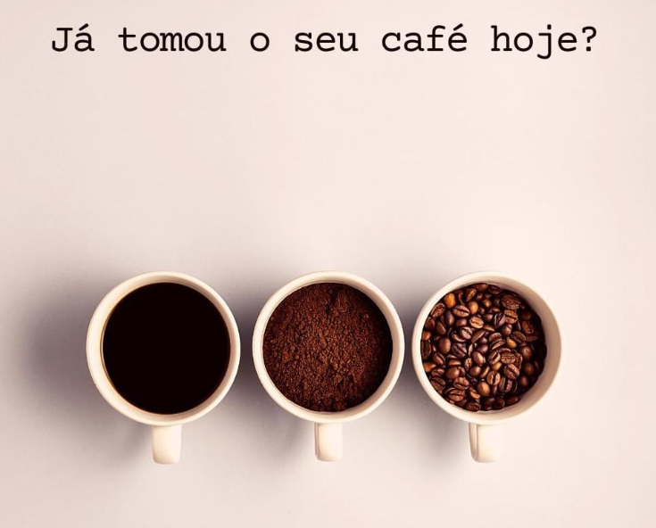

Oportunidade de Emprego na Fazenda Recanto Grande
Venha Fazer Parte do Mundo do Café Especial!
Se você é apaixonado por café e busca uma oportunidade de emprego que combine sua paixão com o desejo de trabalhar em um ambiente inovador e sustentável, temos uma excelente notícia! Nossa fazenda de café está em busca de talentos dedicados e entusiastas para se juntarem à nossa equipe e fazerem parte do emocionante mundo do café especial.
A Oportunidade:
Estamos atualmente com vagas abertas em diferentes áreas da fazenda, desde o cultivo e colheita até o processamento e comercialização do café. Valorizamos a diversidade e estamos em busca de pessoas com diferentes habilidades e experiências para enriquecer ainda mais nosso time.
1. Operador de Beneficiamento de Café:
Descrição da Vaga:
Estamos buscando um Operador de Beneficiamento de Café dedicado e experiente para integrar nossa equipe. Nesta função, você será responsável por operar máquinas e equipamentos essenciais no processo de beneficiamento do café. Sua habilidade em manusear os equipamentos com precisão e atenção aos detalhes será fundamental para garantir que nossos grãos sejam processados com a máxima qualidade.
Requisitos:
- Experiência prévia como Operador de Beneficiamento de Café ou em cargos similares será valorizada.
- Conhecimentos em máquinas agrícolas e processos de beneficiamento do café.
- Capacidade de trabalhar em equipe e sob pressão.
- Compromisso com a qualidade do café produzido e com a manutenção das práticas de segurança no trabalho.
2. Técnico em Agropecuária:
Descrição da Vaga:
Estamos buscando um Técnico em Agropecuária apaixonado pela agricultura e comprometido com práticas sustentáveis. Nesta posição, você auxiliará no planejamento e execução das atividades agrícolas, monitorando as condições climáticas e do solo para garantir o melhor desempenho de nossas plantações. Além disso, você será responsável por identificar e controlar pragas e doenças de forma sustentável e eficiente.
Requisitos:
- Formação técnica em Agropecuária ou áreas correlatas.
- Experiência em fazendas ou atividades agrícolas será valorizada.
- Conhecimento em tecnologias agrícolas, práticas sustentáveis e conservação de recursos.
- Habilidades de trabalho em equipe e resolução de problemas.
Benefícios:
- Remuneração competitiva e oportunidades de crescimento profissional.
- Ambiente de trabalho inspirador e com foco na inovação.
- Participação em uma equipe apaixonada pelo café e pela sustentabilidade.
- Contribuição para a produção de cafés especiais de alta qualidade e reconhecidos internacionalmente.
Como se Candidatar:
Se você se enquadra no perfil para uma dessas posições e deseja fazer parte de uma fazenda de café inovadora e sustentável, envie mensagens para as redes socias mencionadas logo abaixo dessa mensagem. Na primeira mensagem mencione o cargo de interesse e em seguida o seu currículo.
Estamos animados para conhecer profissionais dedicados e entusiasmados, prontos para abraçar a paixão pelo café e contribuir para a excelência de nossa fazenda. Junte-se a nós nessa emocionante jornada de café e agricultura sustentável!